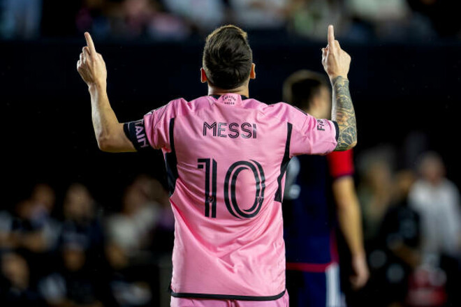

Божевільний хет-трик за 11 хвилин. Мессі встановив рекорд Інтер Маямі
Головним героєм зустрічі став аргентинський нападник «чапель» Ліонель Мессі. Футболіст вийшов на заміну на 57 хвилині матчу за рахунку 2:2. До кінця зустрічі він оформив хет-трик (за 11 хвилин). 37-річний аргентинець став найкращим бомбардиром Інтер Маямі за всю історію — на його рахунку 33 голи. Мессі обійшов еквадорця Леонардо Кампану, у якого 32 м’ячі. У поточному сезоні Лео забив 17 голів і віддав 10 асистів у 18 матчах MLS.